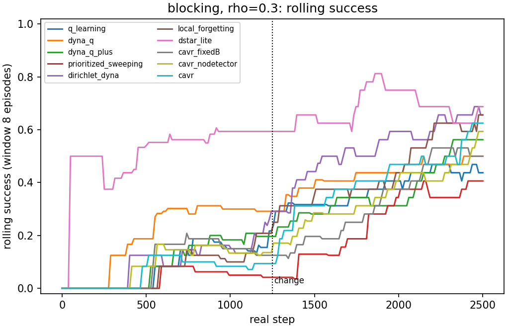

Blocking, ρ=0.3: rolling success (window 8 episodes); dotted marker = topology change. All ten methods, same seeds.
| method | success | succ_post | delay_med | plan_ms |
|---|---|---|---|---|
| cavrOURS | 0.445 | 0.616 | 82 | 4412 |
| dstar_lite | 0.726 | 0.674 | 54 | 161 |
| dirichlet_dyna | 0.512 | 0.606 | 155 | 0 |
| local_forgetting | 0.479 | 0.590 | 152 | 0 |
| dyna_q | 0.404 | 0.491 | 113 | 0 |
| q_learning | 0.358 | 0.453 | 142 | 0 |
D* Lite leads this condition — published as measured; CAVR trades planning wall-clock for model-based adaptation that needs no replanning oracle.